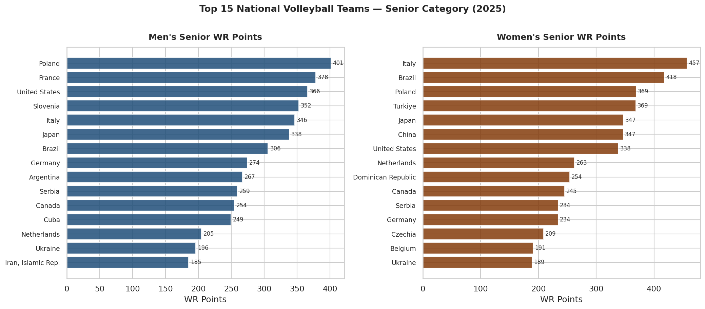
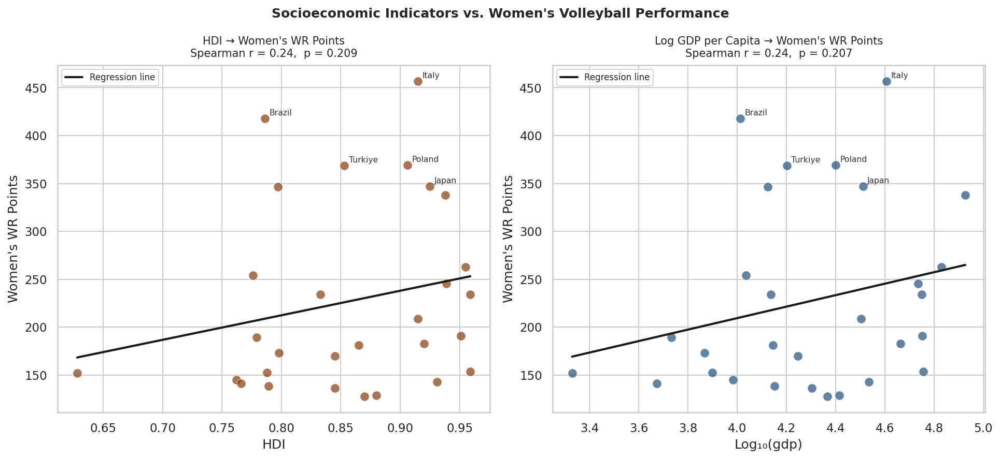
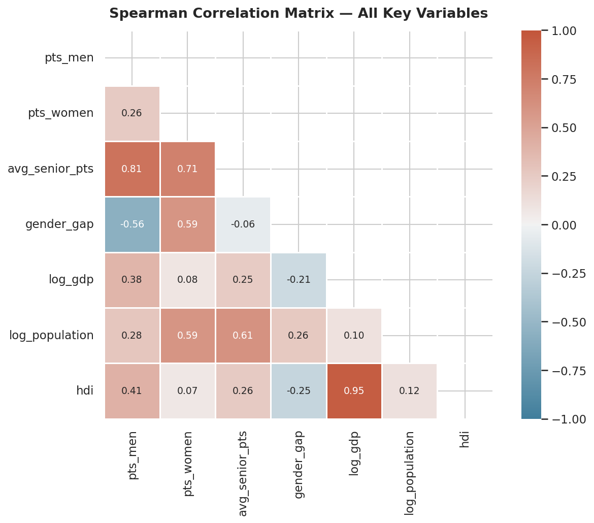
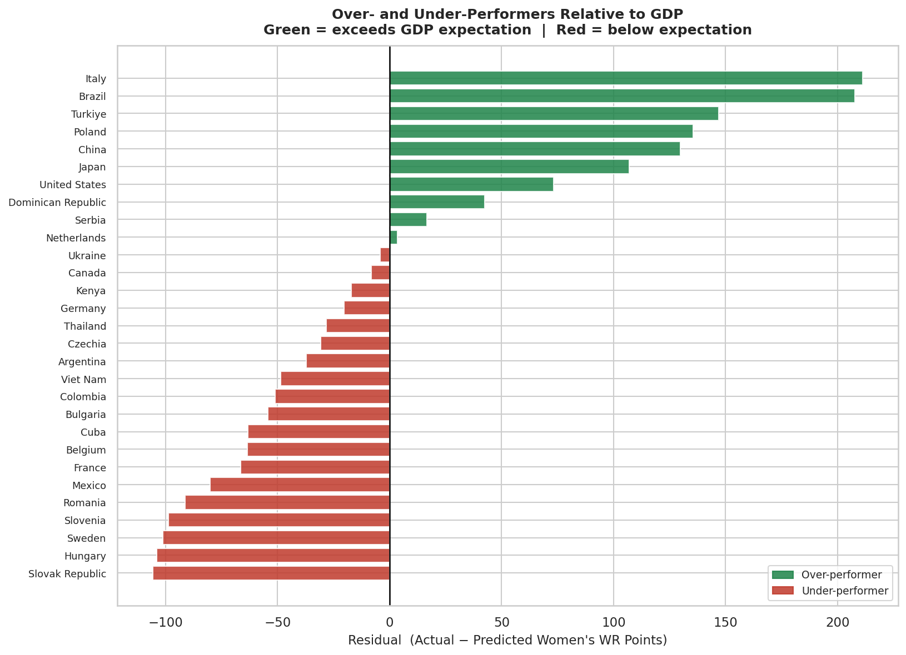
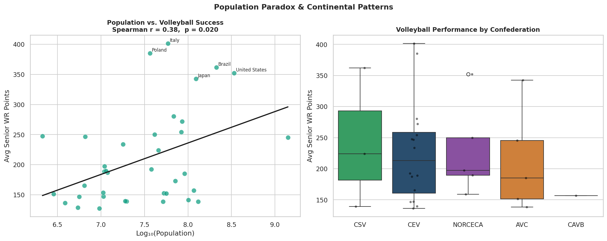
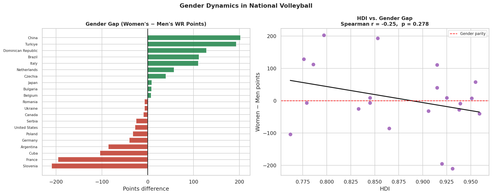

Does GDP predict which countries dominate volleyball — or is something else at play?
Volleyball is a sport I closely follow. While watching international competitions, I noticed that certain countries consistently dominate — but not always the wealthiest ones. Brazil and Turkey produce world-class teams despite having lower GDP per capita than many European nations, while massive populous countries are often absent from the top rankings. This sparked my central question: what actually explains national volleyball success?
Turkey is a particularly interesting case. I grew up watching Vakıfbank and Fenerbahçe dominate European club volleyball, and the national women's team consistently finishing in the top four at World Championships — ahead of countries with GDP per capita two or three times higher. That gap between economic indicators and volleyball results was what originally made me want to look at this properly.
The analysis runs across 7 notebooks, each building on the previous. Data was merged from FIVB rankings (Wikipedia), World Bank GDP and population data, and the UNDP Human Development Index.





